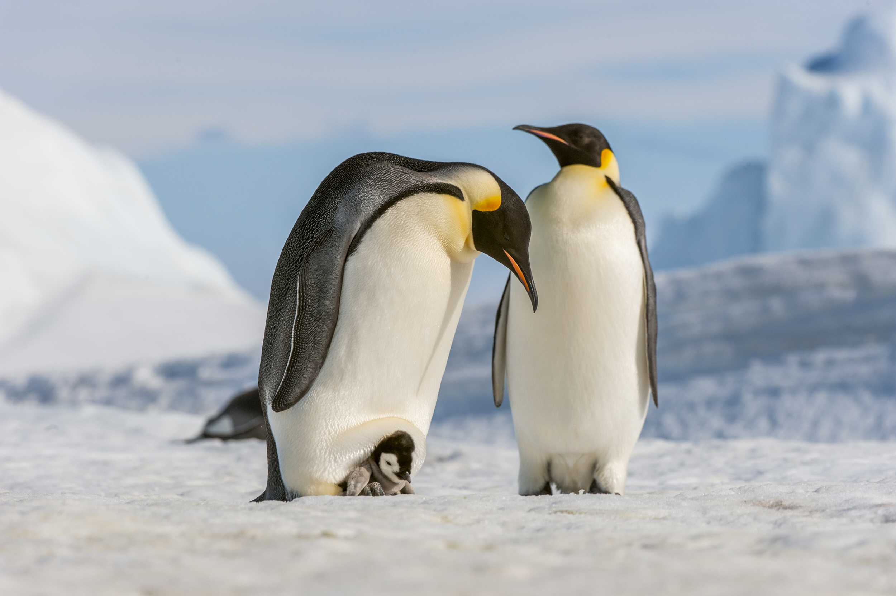

10 Penguin Fun Facts

1. Penguins don’t have teeth.
Penguins are birds, and birds don’t have teeth. Still, it can be scary the first time you see the inside of a penguin’s mouth, complete with serrated ridges on the top of the mouth that can be used to break up food.
2. Penguins are only found in the Southern Hemisphere.
While you may think that penguins are found anywhere cold, they primarily live in a variety of different climates across the Southern Hemisphere and are most concentrated in Antarctica. Only the Galápagos penguin has been found north of the equator.
3. There are 18 species of penguin.
This is actually a highly-debated subject in the world of penguin science. Traditionally, the number of worldwide penguin species has been listed as 17. In 2006, this number was changed to 18, when the rockhopper penguin began to be recognized as two distinct species: the southern rockhopper penguin and the northern rockhopper penguin. Scientists around the world have begun to look more closely at other penguins and realized that there might be more species or sub-species too.
4. Penguins originated in Australia.
Though penguins are best associated with Antarctica, recent research shows that the common ancestor of modern penguins first appeared off the coast of Australia, New Zealand, and some additional South Pacific islands around 22 million years ago.
5. The smallest penguin is only a foot tall.
The Little Penguin, found off the coasts of Australia and New Zealand, stands at an adorable 12-14 inches tall. Though they may be small, they spend most of their time frolicking in the ocean.
6. Penguins are monogamous during breeding season.
Each breeding season, penguins choose a mate who they stick with for the entirety of the season. A penguin may or may not choose the same partner the next year, though.
7. The largest living penguin is the emperor penguin.
The emperor penguin grows up to 45 inches tall, standing at nearly four feet in height. However, fossil evidence in New Zealand shows that human-size penguins existed around 30 million years ago.
8. A group of penguins in the water is called a raft, and on land, that group is called a waddle.
Have you ever seen a waddle of penguins?
9. Penguins cannot fly.
Instead, their wings have evolved specifically for swimming.
10. Penguin populations are declining.
In fact, the African penguin and the Galápagos penguin have both seen such rapid population declines in recent years that they are considered endangered. Ten penguin species are listed as either vulnerable or endangered on the IUCN Red List, making penguins the second-most threatened bird group in the world after the albatross.
The most imminent danger to penguins is the rapidly changing oceanic conditions caused by climate change. Factory farming is one of the greatest contributors to climate change. In addition to the cruelty endured by farmed animals, wildlife, like penguins, is also suffering from the factory farming system. You can help endangered and vulnerable penguins by pledging to eat less meat. Sign up for Meating Halfway, a 21-day journey that will help you reduce your meat consumption.